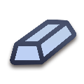

Imperium
Imperium Silver
← all trade goods · all regions · wiki index

In game: Silver: Mines can be constructed at the nearby settlement
What it is
| Subtype | Mineable — the mines chain can be built at the settlement that holds it. | Tier | 5 | Trade value | 3 |
| Groups | precious minerals, all minerals | When mined | Silver Mine: A valuable source of income |
What it does
Where these answers come from, and what an unestablished effect means
What a good does is read off the clauses the mod conditions on it — a requirement on a building level, on a numeric effect, or on a recruitment line, including the ones reached through the building file's own aliases. Negated clauses count: withholding something is an effect. Where nothing in the mod conditions on a good, the page says no effect established rather than describing what the word suggests.
The mod calls this good silver internally; that is the word the conditions on this page are written against.
- Lets you build — 6 building levels: Jewellery Crafter (Industry), Artisan Jeweller (Industry), Jewellers Quarter (Industry), Jewellery Exports (Industry), Mines (Industry), Deep Mining Complex (Industry)
- Numeric effects where it is present — trade income +1 to +2 (Jewellery Crafter (Industry)); trade income +3 to +4 (Artisan Jeweller (Industry)); trade income +4 to +5 (Jewellers Quarter (Industry)); trade income +5 to +7 (Jewellery Exports (Industry)); mine income +9 (Mines (Industry)); mine income +15 (Deep Mining Complex (Industry)); trade income +3 (Local Mint (Civic)); taxable income +14 (State Mint (Civic)); trade income +2 (State Mint (Civic)); taxable income +20 (Great Mint (Civic)); trade income +3 (Great Mint (Civic))
- Numeric effects it withholds — these are granted only where it is absent: trade income +1 (Jewellery Crafter (Industry)); trade income +3 (Artisan Jeweller (Industry)); trade income +4 (Jewellers Quarter (Industry)); trade income +5 (Jewellery Exports (Industry)); mine income +6 (Mines (Industry)); mine income +10 (Deep Mining Complex (Industry)); taxable income +6 to +10 (Local Mint (Civic)); trade income +2 to +3 (Local Mint (Civic)); taxable income +10 to +14 (State Mint (Civic)); trade income +1 to +2 (State Mint (Civic)); taxable income +14 to +20 (Great Mint (Civic)); trade income +2 to +3 (Great Mint (Civic))
Where it is found
89 markers on the map, 133 in total quantity, across 89 regions.
Who holds those regions at the campaign start (36 factions)
| Faction | Regions | Faction | Regions | Faction | Regions |
|---|---|---|---|---|---|
| Rebels | 37 | Seleucid Empire | 7 | Antigonid Kingdom | 6 |
| Bactria | 2 | Oretani | 2 | Pontus | 2 |
| Ptolemaic Empire | 2 | Scordisci | 2 | Sequani | 2 |
| Albanians | 1 | Allobroges | 1 | Armenia | 1 |
| Armenia Minor | 1 | Athens | 1 | Bessi | 1 |
| Breuni | 1 | Brigantes | 1 | Cadurci | 1 |
| Cappadocia | 1 | Carthage | 1 | Daesitiates | 1 |
| Dardania | 1 | Dentheletae | 1 | Hadhramaut | 1 |
| Indians | 1 | Maedi | 1 | Mossynoeci | 1 |
| Ordovices | 1 | Osismii | 1 | Rome | 1 |
| Saba | 1 | Sardinians | 1 | Seleucid Rebels | 1 |
| Sophene | 1 | Sugambri | 1 | Tencteri | 1 |